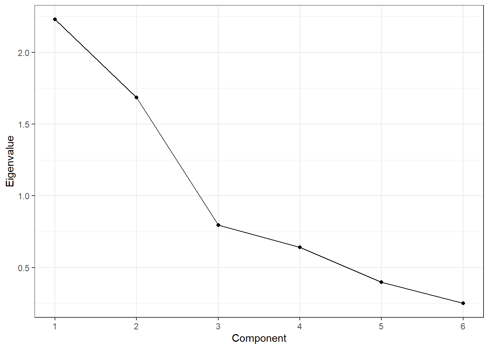

Chapter 11 PCA and Perceptual Maps
11.1 Introduction: Why PCA Matters in Marketing Analytics
Marketing datasets often contain many related variables that describe how consumers perceive brands, products, or services. When these attributes are highly correlated, interpretation becomes difficult and redundancy increases. Principal Components Analysis (PCA) is a dimension-reduction technique that helps uncover the underlying structure in such data.
In marketing analytics, PCA is commonly used to:
- Summarize brand image and positioning data
- Reduce large attribute batteries into interpretable dimensions
- Serve as the foundation for perceptual maps
In this chapter, we focus on applying PCA for interpretation and insight, not mathematical derivation. We will:
- Fit a PCA model and evaluate diagnostics
- Choose an appropriate number of components
- Interpret component loadings
- Use PCA results to construct perceptual maps
As a high-level overview, PCA transforms a set of correlated variables into a smaller set of new variables called principal components. Each component is a weighted combination of the original variables.
Key ideas:
- Components are ordered by how much variance they explain
- The first component explains the most variance, the second explains the most remaining variance, and so on
- Components are uncorrelated with one another
From a marketing perspective, PCA helps answer: “What are the main dimensions consumers use to differentiate brands?”
11.2 The greekbrands Dataset
This chapter uses the greekbrands dataset, which contains simulated attribute ratings and brand preference data for ten fictional technology brands. Each observation
corresponds to a respondent-brand evaluation.
The dataset includes:
- A brand identifier
- Multiple numeric attribute ratings describing brand perceptions
This type of brand image data is well suited for PCA because many of the attributes tend to be correlated and may reflect a smaller number of latent dimensions.
11.3 Preparing for PCA in a Marketing Context
Before fitting a PCA model, it is important to:
- Use only numeric perceptual attributes
- Exclude identifiers (e.g., brand names, respondent IDs)
- Consider whether PCA should be run at the individual or brand level
For perceptual mapping, brand-level aggregation is typically preferred so that brands (not respondents) appear as points in the map.
11.4 PCA Modeling
11.4.1 Fitting an Initial PCA Model
We begin with an initial PCA fit to evaluate how many components should be
retained. This step focuses on diagnostics rather than interpretation. Although PCA is not difficult in base R using the prcomp() function, we’ll use the easy_pca_fit() function from the MKT4320BGSU to automate the process for both fitting and a separate function for the final model.
Usage:
easy_pca_fit(data, vars, group = NULL, ft = TRUE)- where:
datais a data frame containing the full dataset.varsis a character vector of variable names to use in PCA (required). All variables must be numeric.groupis an optional character sting of a single variable name to aggregate by before PCA.ftis logical; if TRUE, return $table as a flextable (default = TRUE).
In the example below, we do not use the group option.
attr_vars <- c("perform", "leader", "fun", "serious", "bargain", "value")
pca_fit <- easy_pca_fit(data = greekbrands, vars = attr_vars, ft=TRUE)
pca_fit$tableComponent | Eigenvalue | Difference | Proportion | Cumulative |
|---|---|---|---|---|
1 | 2.2293 | 0.5454 | 0.3716 | 0.3716 |
2 | 1.6839 | 0.8876 | 0.2806 | 0.6522 |
3 | 0.7963 | 0.1545 | 0.1327 | 0.7849 |
4 | 0.6418 | 0.2433 | 0.1070 | 0.8919 |
5 | 0.3985 | 0.1484 | 0.0664 | 0.9583 |
6 | 0.2501 | 0.0417 | 1.0000 |

The eigenvalue table and scree plot summarize how much variance each component explains. Important columns in the eigenvalue table include:
- Eigenvalue: total variance explained by each component
- Proportion: share of total variance explained
- Cumulative: cumulative proportion of variance explained
Common decision rules:
- Retain components with eigenvalues greater than 1
- Look for an “elbow” where additional components add little explanatory power
- Aim for a solution that balances parsimony and interpretability
There is no single correct answer. Component retention should be guided by marketing judgment as well as statistics.
11.4.2 Final PCA Solution
After deciding how many components to retain, we refit the PCA model and examine
the loadings using the easy_pca_final() function from the MKT4320BGSU package.
Usage:
easy_pca_final(data, vars, comp, group = NULL, ft = TRUE)- where:
datais a data frame containing the full dataset.varsis a character vector of variable names to use in PCA (required). All variables must be numeric.compis an integer representing the number of components to retain.groupis an optional character sting of a single variable name to aggregate by before PCA.ftis logical; if TRUE, return $table as a flextable (default = TRUE).
In the example below, we again choose not to use the group option.
pca_final <- easy_pca_final(data = greekbrands, vars = attr_vars,
comp = 2, ft=TRUE)
pca_final$rotatedVarimax-Rotated PCA Loadings | |||
|---|---|---|---|
Variable | Comp_1 | Comp_2 | Unexplained |
perform | 0.7243 | -0.0750 | 0.4697 |
leader | 0.8404 | -0.0486 | 0.2914 |
fun | -0.5475 | 0.1496 | 0.6778 |
serious | 0.7849 | 0.0434 | 0.3821 |
bargain | -0.0189 | -0.9294 | 0.1359 |
value | 0.0698 | -0.9302 | 0.1298 |
We focus on the varimax-rotated loadings because they are easier to interpret. A loading represents the relationship between an original attribute and a component:
- Larger absolute values indicate stronger relationships
- Attributes with high loadings on the same component tend to reflect a common underlying dimension
When interpreting loadings:
- Look for patterns across attributes
- Identify which attributes define each component
- Assign descriptive, managerially meaningful names to components
For example:
- A component with high loadings on perform, leader, and serious might be labeled Performance
- A component with high loadings on bargain and value might be labeled Value Orientation
11.5 From PCA to Perceptual Maps
PCA components can be used as axes in perceptual maps. Each brand’s position on a component reflects how strongly it scores on that underlying dimension.
Perceptual maps translate statistical results into a visual format that is easy to communicate to managers and decision-makers.
11.6 Attribute-Based Perceptual Maps Using PCA
11.6.1 Creating PCA-Based Maps
We now use the retained PCA solution to create perceptual maps. We use the easy_pca_maps() function from the MKT4320BGSU package to automate the process.
Usage:
easy_pca_maps(data, vars, group, comp, pref = NULL, rotate = TRUE,
arrow_scale = 0.75,label_pad = 0.04)- where:
datais a data frame containing individual-level observations.varsis a character vector of numeric attribute variable names used in PCA.groupis a single string specifying the grouping variable (e.g., brand or product name).compis an integer specifying the number of components to retain (must be \(≥2\)).prefis an optional single string specifying a numeric preference variable name to produce a joint space map with a preference vector (if data is available)rotateis logical; if TRUE (default), apply varimax rotation to the retained component space before creating perceptual maps.arrow_scaleis numeric in (0, 1]; scales arrow lengths relative to the object range (default = 0.75).label_padis numeric; distance (as a proportion of the axis range) used to push attribute arrow labels beyond arrow tips (default = 0.04) for easier viewing of the map.
We’ll use the same variables as before, but add in the required group and an optional pref to create a joint space map.
pca_maps <- easy_pca_maps(data = greekbrands, vars = attr_vars,
group = "brand", pref = "pref", comp = 2)
pca_maps$plots$Comp_1_vs_Comp_2
The map displays:
- Brands as points
- Attribute vectors showing how attributes align with the components
Key interpretation guidelines:
- Brands close together are perceived similarly
- Brands far apart are perceived differently
- Attribute vectors indicate the direction of increasing attribute values
- Brands in the direction of an attribute vector score higher on that attribute
- Attribute vectors more parallel with the preference vector (if available) a stronger drivers of preference
Distances are relative and should be interpreted qualitatively rather than precisely.
11.7 Managerial Interpretation and Strategic Insights
PCA-based perceptual maps can help managers:
- Identify direct competitors
- Detect market clusters and white space
- Evaluate whether a brand’s positioning matches strategic intent
These insights can inform:
- Positioning statements
- Advertising and messaging strategy
- Product reformulation decisions
Common Pitfalls and Best Practices
- Do not over-interpret small loadings
- Avoid retaining too many components
- Remember that PCA alone reflects perceptions, not preferences
- Always explain components in clear, non-technical language
11.8 Chapter Summary
In this chapter, we:
- Used PCA to reduce and interpret brand perception data
- Applied diagnostics to choose the number of components
- Interpreted rotated component loadings
- Created perceptual maps to visualize brand positioning
PCA is a powerful bridge between data analysis and strategic insight in marketing analytics.
11.9 What’s Next
In the next chapter, we shift from describing perceptions to testing causal impact.Specifically, we will study A/B testing and uplift modeling, which are tools used to answer questions such as:
- Does a new message, offer, or design actually change behavior?
- How large is the effect of a treatment compared to a control?
- Are some customers more responsive to an intervention than others?
Where PCA and perceptual maps help us understand how consumers see brands, A/B testing helps us evaluate what actions work, and uplift modeling helps us determine for whom they work best. These methods are central to modern data-driven marketing in areas such as digital advertising, pricing experiments, promotions, and personalization.